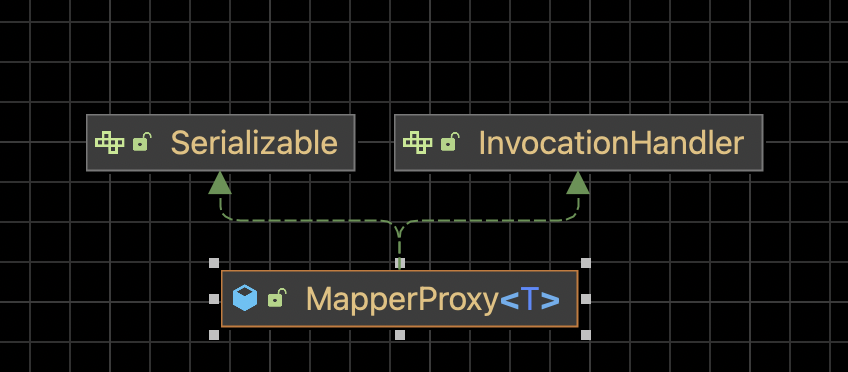
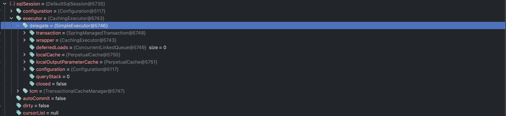
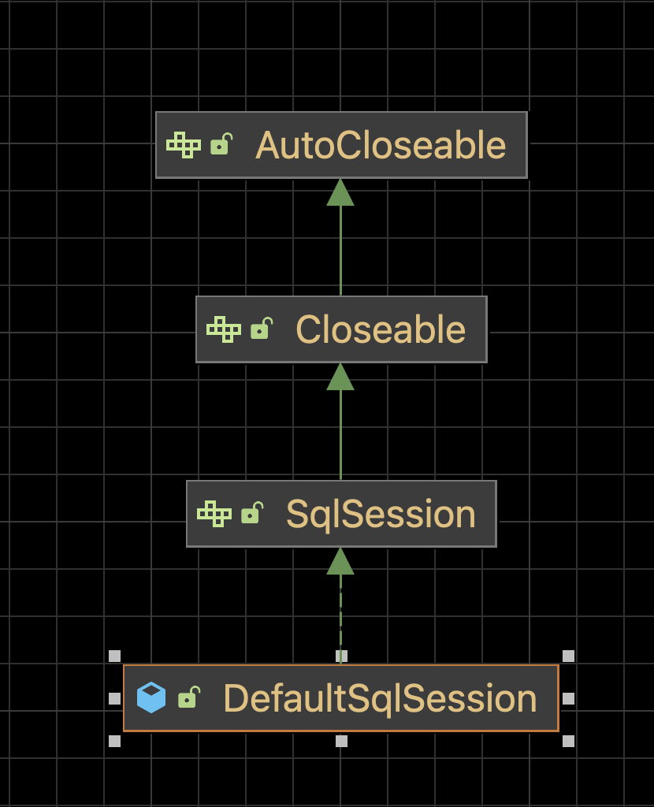
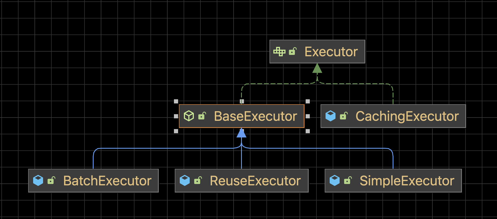

MyBatis 执行流程
MapperProxy
MapperProxy 实现了 JDK 动态代理的 InvocationHandler 接口，当 执行 mapper 中的方法是会进入到 MapperProxy 的 invoke 方法。

org.apache.ibatis.binding.MapperProxy#invoke
public Object invoke(Object proxy, Method method, Object[] args) throws Throwable {
try {
// Object方法直接执行
if (Object.class.equals(method.getDeclaringClass())) {
return method.invoke(this, args);
}
// 执行 Mapper 中的方法
return cachedInvoker(method).invoke(proxy, method, args, sqlSession);
} catch (Throwable t) {
throw ExceptionUtil.unwrapThrowable(t);
}
}org.apache.ibatis.binding.MapperProxy#cachedInvoker
private MapperMethodInvoker cachedInvoker(Method method) throws Throwable {
try {
// 先查缓存的方法
return MapUtil.computeIfAbsent(methodCache, method,
m -> {
// 处理接口中的默认方法
if (m.isDefault()) {
try {
// JDK9 新方法 privateLookupIn(Class<?> targetClass, MethodHandles.Lookup lookup)
if (privateLookupInMethod == null) {
return new DefaultMethodInvoker(getMethodHandleJava8(method));
} else {
return new DefaultMethodInvoker(getMethodHandleJava9(method));
}
} catch (IllegalAccessException | InstantiationException | InvocationTargetException
| NoSuchMethodException e) {
throw new RuntimeException(e);
}
}
// 处理其它方法
else {
return new PlainMethodInvoker(new MapperMethod(mapperInterface, method,
sqlSession.getConfiguration())); (1)
}
});
} catch (RuntimeException re) {
Throwable cause = re.getCause();
throw cause == null ? re : cause;
}
}| 1 | 每个方法对应一个 MapperMethod 对象。 |
PlainMethodInvoker 是 MapperProxy 中的一个内部类，同样实现了 InvocationHandler 接口。在 invoke 方法中调用了 MapperMethod 的 execute 方法。
@Override
public Object invoke(Object proxy, Method method, Object[] args, SqlSession sqlSession) throws Throwable {
return mapperMethod.execute(sqlSession, args);
}MapperMethod 的 execute 方法中调用 sqlSession 中定义的方法执行 SQL
org.apache.ibatis.binding.MapperMethod#execute
public Object execute(SqlSession sqlSession, Object[] args) { (1)
Object result;
switch (command.getType()) {
// sqlSession.insert()
case INSERT: {
Object param = method.convertArgsToSqlCommandParam(args);
result = rowCountResult(sqlSession.insert(command.getName(), param));
break;
}
// sqlSession.update()
case UPDATE: {
Object param = method.convertArgsToSqlCommandParam(args);
result = rowCountResult(sqlSession.update(command.getName(), param));
break;
}
// sqlSession.()
case DELETE: {
Object param = method.convertArgsToSqlCommandParam(args);
result = rowCountResult(sqlSession.delete(command.getName(), param));
break;
}
case SELECT:
// 当返回空 or 持有 ResultHandler
if (method.returnsVoid() && method.hasResultHandler()) {
executeWithResultHandler(sqlSession, args);
result = null;
}
// 当返回集合 or 数组
else if (method.returnsMany()) {
result = executeForMany(sqlSession, args);
}
// 当返回 Map
else if (method.returnsMap()) {
result = executeForMap(sqlSession, args);
}
// 当返回 游标
else if (method.returnsCursor()) {
result = executeForCursor(sqlSession, args);
} else {
Object param = method.convertArgsToSqlCommandParam(args);
result = sqlSession.selectOne(command.getName(), param);
if (method.returnsOptional()
&& (result == null || !method.getReturnType().equals(result.getClass()))) {
result = Optional.ofNullable(result);
}
}
break;
case FLUSH:
result = sqlSession.flushStatements();
break;
default:
throw new BindingException("Unknown execution method for: " + command.getName());
}
if (result == null && method.getReturnType().isPrimitive() && !method.returnsVoid()) {
throw new BindingException("Mapper method '" + command.getName()
+ " attempted to return null from a method with a primitive return type (" + method.getReturnType() + ").");
}
return result;
}| 1 |
SqlSession

|
DefaultSqlSession
DefaultSqlSession 是 DefaultSqlSession 的默认实现

insert update delete 方法
全都进入 update(java.lang.String, java.lang.Object)
org.apache.ibatis.session.defaults.DefaultSqlSession#update
public int update(String statement, Object parameter) {
try {
dirty = true;
MappedStatement ms = configuration.getMappedStatement(statement);
return executor.update(ms, wrapCollection(parameter));
} catch (Exception e) {
throw ExceptionFactory.wrapException("Error updating database. Cause: " + e, e);
} finally {
ErrorContext.instance().reset();
}
}select 方法
根据返回值的不同分进入 selectList、selectMap、selectCursor 方法。
private <E> List<E> selectList(String statement, Object parameter, RowBounds rowBounds, ResultHandler handler) {
try {
MappedStatement ms = configuration.getMappedStatement(statement);
return executor.query(ms, wrapCollection(parameter), rowBounds, handler);
} catch (Exception e) {
throw ExceptionFactory.wrapException("Error querying database. Cause: " + e, e);
} finally {
ErrorContext.instance().reset();
}
}public <K, V> Map<K, V> selectMap(String statement, Object parameter, String mapKey, RowBounds rowBounds) {
final List<? extends V> list = selectList(statement, parameter, rowBounds);
final DefaultMapResultHandler<K, V> mapResultHandler = new DefaultMapResultHandler<>(mapKey,
configuration.getObjectFactory(), configuration.getObjectWrapperFactory(),
configuration.getReflectorFactory());
final DefaultResultContext<V> context = new DefaultResultContext<>();
for (V o : list) {
context.nextResultObject(o);
mapResultHandler.handleResult(context);
}
return mapResultHandler.getMappedResults();
}public <T> Cursor<T> selectCursor(String statement, Object parameter, RowBounds rowBounds) {
try {
MappedStatement ms = configuration.getMappedStatement(statement);
Cursor<T> cursor = executor.queryCursor(ms, wrapCollection(parameter), rowBounds);
registerCursor(cursor);
return cursor;
} catch (Exception e) {
throw ExceptionFactory.wrapException("Error querying database. Cause: " + e, e);
} finally {
ErrorContext.instance().reset();
}
}这些方法都是在 BaseExecutor 中定义的模板方法，具体执行 SQL 操作的方法由子类来实现。
Executor
BaseExecutor 作为基干类，其中除了定义的 SQL 执行的模板方法外，还有一级缓存相关的处理。

org.apache.ibatis.executor.BaseExecutor#query
public <E> List<E> query(MappedStatement ms, Object parameter, RowBounds rowBounds, ResultHandler resultHandler) throws SQLException {
// 获取 SQL
BoundSql boundSql = ms.getBoundSql(parameter);
// 获取缓存 Key
CacheKey key = createCacheKey(ms, parameter, rowBounds, boundSql);
return query(ms, parameter, rowBounds, resultHandler, key, boundSql);
}获取 SQL
public BoundSql getBoundSql(Object parameterObject) {
BoundSql boundSql = sqlSource.getBoundSql(parameterObject); (1)
List<ParameterMapping> parameterMappings = boundSql.getParameterMappings();
if (parameterMappings == null || parameterMappings.isEmpty()) {
boundSql = new BoundSql(configuration, boundSql.getSql(), parameterMap.getParameterMappings(),
parameterObject);
}
for (ParameterMapping pm : boundSql.getParameterMappings()) {
String rmId = pm.getResultMapId();
if (rmId != null) {
ResultMap rm = configuration.getResultMap(rmId);
if (rm != null) {
hasNestedResultMaps |= rm.hasNestedResultMaps();
}
}
}
return boundSql;
}| 1 | 这里会解析动态 SQL 中的 #{} 和 ${} |
一级缓存处理
org.apache.ibatis.executor.BaseExecutor#query
public <E> List<E> query(MappedStatement ms, Object parameter, RowBounds rowBounds,
ResultHandler resultHandler, CacheKey key, BoundSql boundSql) throws SQLException {
ErrorContext.instance().resource(ms.getResource()).activity("executing a query").object(ms.getId());
if (closed) {
throw new ExecutorException("Executor was closed.");
}
if (queryStack == 0 && ms.isFlushCacheRequired()) {
clearLocalCache();
}
List<E> list;
try {
queryStack++;
// 先查缓存
list = resultHandler == null ? (List<E>) localCache.getObject(key) : null;
if (list != null) {
// 存储过程返回值缓存的位置不同，需要单独处理
handleLocallyCachedOutputParameters(ms, key, parameter, boundSql);
} else {
// 查库
list = queryFromDatabase(ms, parameter, rowBounds, resultHandler, key, boundSql);
}
} finally {
queryStack--;
}
if (queryStack == 0) {
for (DeferredLoad deferredLoad : deferredLoads) {
deferredLoad.load();
}
// issue #601
deferredLoads.clear();
if (configuration.getLocalCacheScope() == LocalCacheScope.STATEMENT) {
// issue #482
clearLocalCache();
}
}
return list;
}查库
org.apache.ibatis.executor.BaseExecutor#queryFromDatabase
private <E> List<E> queryFromDatabase(MappedStatement ms, Object parameter, RowBounds rowBounds, ResultHandler resultHandler, CacheKey key, BoundSql boundSql) throws SQLException {
List<E> list;
localCache.putObject(key, EXECUTION_PLACEHOLDER);
try {
// 真正的查询逻辑在子类
list = doQuery(ms, parameter, rowBounds, resultHandler, boundSql);
} finally {
localCache.removeObject(key);
}
localCache.putObject(key, list);
if (ms.getStatementType() == StatementType.CALLABLE) {
localOutputParameterCache.putObject(key, parameter);
}
return list;
}org.apache.ibatis.executor.SimpleExecutor#doQuery
public <E> List<E> doQuery(MappedStatement ms, Object parameter, RowBounds rowBounds, ResultHandler resultHandler , BoundSql boundSql) throws SQLException {
Statement stmt = null;
try {
Configuration configuration = ms.getConfiguration();
// 从 Configuration 中获取 StatementHandler
StatementHandler handler = configuration.newStatementHandler(wrapper, ms, parameter, rowBounds, resultHandler, boundSql);
stmt = prepareStatement(handler, ms.getStatementLog());
return handler.query(stmt, resultHandler);
} finally {
closeStatement(stmt);
}
}StatementHandler
创建 StatementHandler
org.apache.ibatis.session.Configuration#newStatementHandler
public StatementHandler newStatementHandler(Executor executor, MappedStatement mappedStatement,
Object parameterObject, RowBounds rowBounds,
ResultHandler resultHandler, BoundSql boundSql) {
// 根据 MappedStatement.statementType 返回不同的 StatementHandler
// 创建 StatementHandler 时，会同时生成 ParameterHandler 和 ResultSetHandler 用于处理请求参数和结果集
StatementHandler statementHandler = new RoutingStatementHandler(executor, mappedStatement, parameterObject,
rowBounds, resultHandler, boundSql);
// 应用插件
statementHandler = (StatementHandler) interceptorChain.pluginAll(statementHandler);
return statementHandler;
}根据 MappedStatement.statementType 路由不同的 MappedStatement
org.apache.ibatis.executor.statement.RoutingStatementHandler#RoutingStatementHandler
public RoutingStatementHandler(Executor executor, MappedStatement ms, Object parameter, RowBounds rowBounds, ResultHandler resultHandler, BoundSql boundSql) {
// 不同的 StatementHandler 构造器方法统一都在 BaseStatementHandler
switch (ms.getStatementType()) {
case STATEMENT: (1)
delegate = new SimpleStatementHandler(executor, ms, parameter, rowBounds, resultHandler, boundSql);
break;
case PREPARED: (2)
delegate = new PreparedStatementHandler(executor, ms, parameter, rowBounds, resultHandler, boundSql);
break;
case CALLABLE: (3)
delegate = new CallableStatementHandler(executor, ms, parameter, rowBounds, resultHandler, boundSql);
break;
default:
throw new ExecutorException("Unknown statement type: " + ms.getStatementType());
}
}| 1 | 可直接操作的 SQL ，对应 JDBC 的 Statement |
| 2 | 预处理处理器 ，对应 JDBC 的 PreparedStatement |
| 3 | 存储过程处理器 ，对应 JDBC 的 CallableStatement |
统一构造方法
org.apache.ibatis.executor.statement.BaseStatementHandler#BaseStatementHandler
protected BaseStatementHandler(Executor executor, MappedStatement mappedStatement, Object parameterObject, RowBounds rowBounds, ResultHandler resultHandler, BoundSql boundSql) {
this.configuration = mappedStatement.getConfiguration();
this.executor = executor;
this.mappedStatement = mappedStatement;
this.rowBounds = rowBounds;
this.typeHandlerRegistry = configuration.getTypeHandlerRegistry();
this.objectFactory = configuration.getObjectFactory();
if (boundSql == null) {
generateKeys(parameterObject);
boundSql = mappedStatement.getBoundSql(parameterObject);
}
this.boundSql = boundSql;
this.parameterHandler = configuration.newParameterHandler(mappedStatement, parameterObject, boundSql);
this.resultSetHandler = configuration.newResultSetHandler(executor, mappedStatement, rowBounds,
parameterHandler, resultHandler, boundSql);
}执行 SQL
org.apache.ibatis.executor.statement.SimpleStatementHandler#query
public <E> List<E> query(Statement statement, ResultHandler resultHandler) throws SQLException {
String sql = boundSql.getSql();
statement.execute(sql); (1)
return resultSetHandler.handleResultSets(statement); (2)
}| 1 | JDBC 查询 |
| 2 | 处理结果集 |